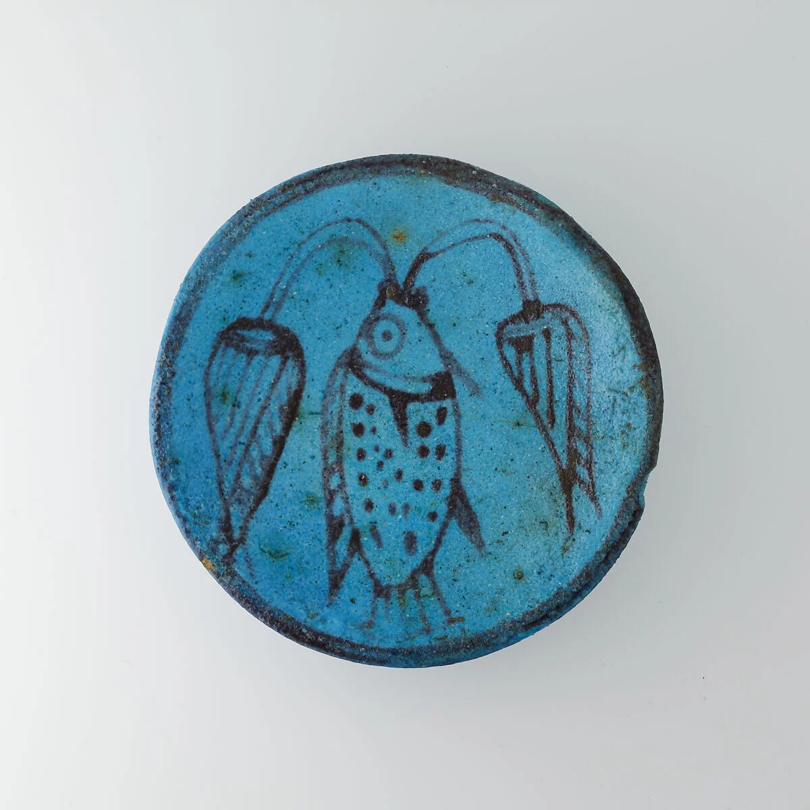

A fish and two stems give
the wish for life a small, circular home.
The fish anchors an axis; stems open out.
Small differences soften the symmetry.
Neighbouring blues meet near-black.
Value contrast keeps the marks clear.
A dark rim encloses a lighter interior.
Glaze and photographic light reveal depth.
Dots, fine lines and firm contours.
A fish becomes a few legible signs.
An unidentified Egyptian craftsperson.
Individual biography remains unknown.
The collection reads signs of regeneration.
To me, a vast wish becomes intimate.
One upright shape and two outward arcs.
Leave a third of the circle empty.
70% cyan + 20% mist + 10% ink.
Exercise colours, not object measurements.
Unidentified Egyptian maker · 2021.41.55
Source: The Metropolitan Museum of Art
Original creator credited; image: Public Domain / CC0.
Independent interpretation.